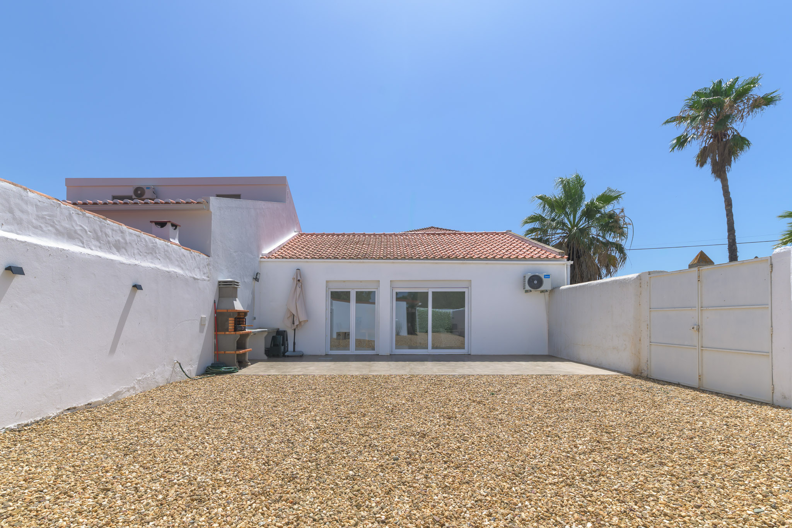
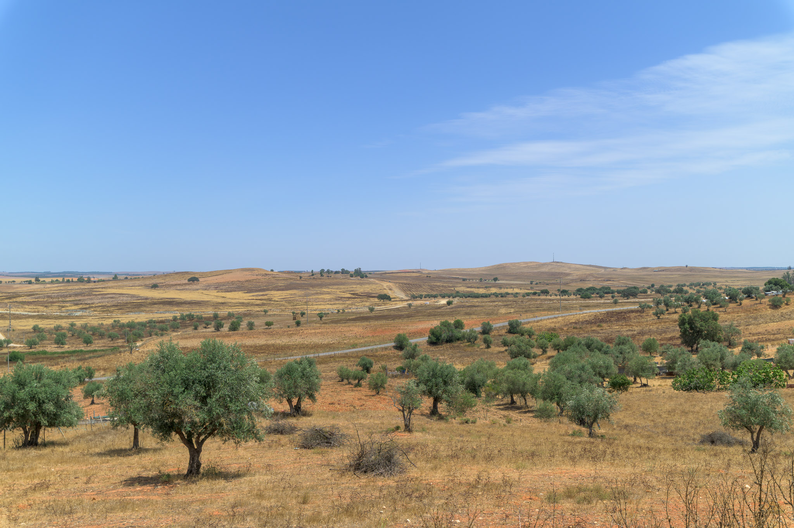
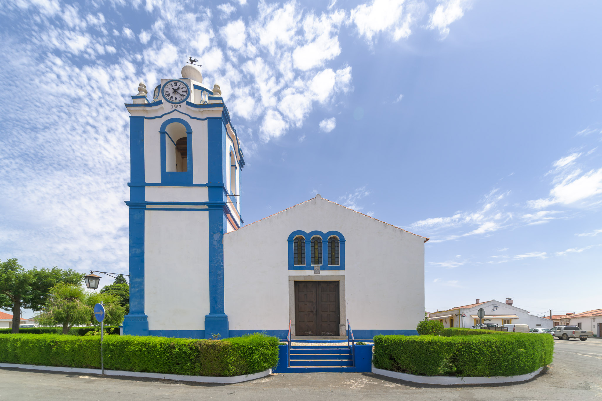
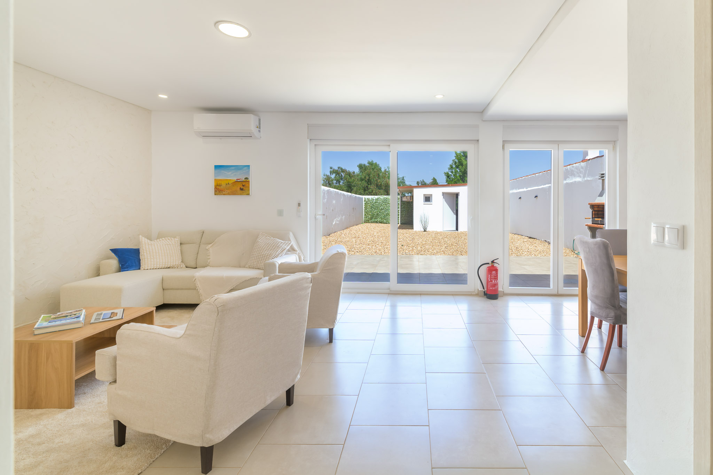
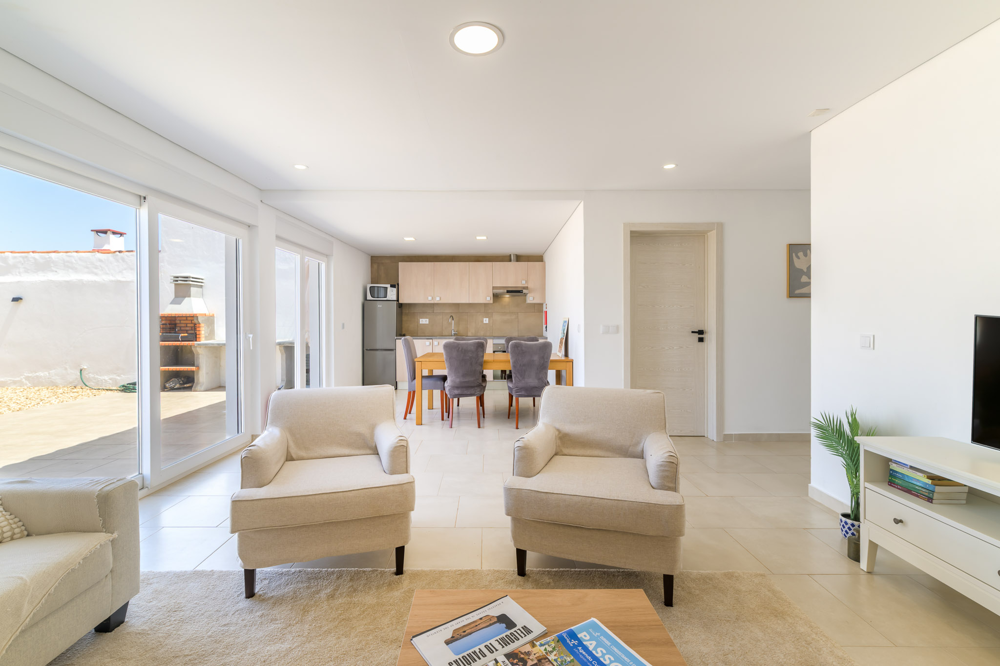
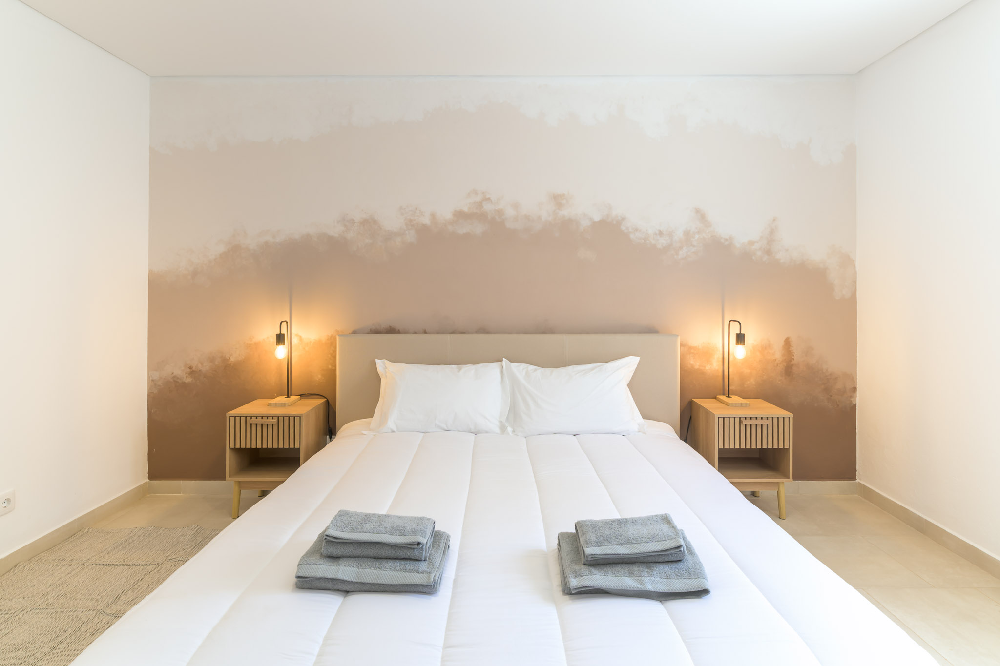
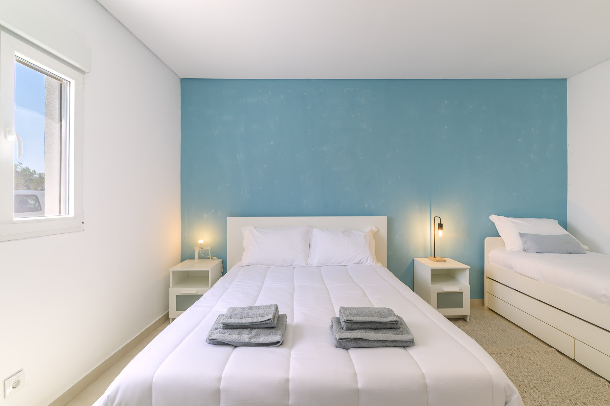
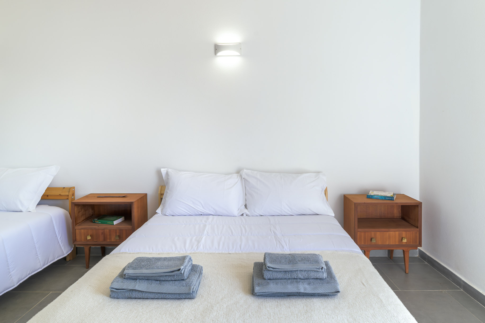
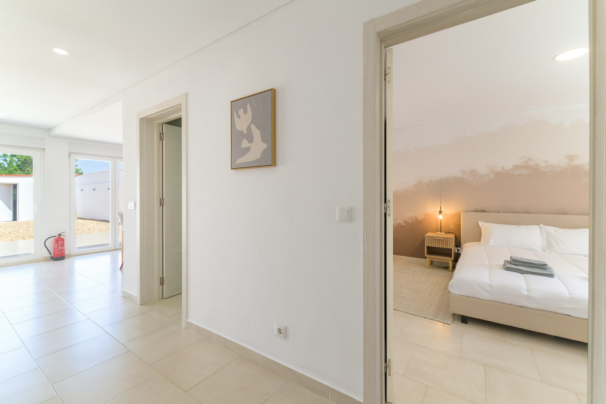

Panóias, Baixo Alentejo
A quiet house
at the edge of the plains
Three bedrooms, a walled garden and nothing much to do but slow down, twenty minutes from the Sado river, in the kind of village where the church bell still keeps time.
Check datesWelcome
Somewhere to stop moving
Panóias is a small farming village on a low hill in the Baixo Alentejo, the kind of place where the loudest sound most days is a rooster or a passing tractor. The house sits inside its own walled plot on the edge of the village, bright and simply furnished, built for people who came here to do very little.
Inside, three bedrooms sleep up to six, the living areas open straight onto a gravelled courtyard with a built-in barbecue, and the kitchen and dining table are set up for the kind of long, unhurried dinners this region is made for.

The water
The Sado, close enough for an afternoon
The Rio Sado runs right past Panóias, held back a short drive from the house at the Monte da Rocha reservoir, a wide, still stretch of water ringed by cork and holm oak. It's used for little more than swimming, slow rowing and watching herons work the shoreline, which is exactly the pace it asks of you.
There's no crowd here and no schedule. Pack a towel, drive out in the late afternoon when the light turns gold over the water, and you'll understand why nobody in the Alentejo is ever in a rush to leave.
A little history
Silence is the whole point
The Alentejo has always moved at its own speed. This is cork and wheat country, cattle and olive country, vast and flat and sun-bleached, that has shaped a culture built around patience: long lunches, longer siestas, and cante alentejano, the unaccompanied choral singing born in the fields that UNESCO now lists as part of the world's heritage.
Panóias itself is a working village, not a postcard one: whitewashed houses trimmed in blue, a handful of streets, a clock tower that's kept the same time since 1887. Nothing here is staged for visitors, which is precisely its appeal.

Inside
The house
Simple, light-filled rooms, nothing to fuss over and nothing missing.






Close by
Worth the short drive
- Panóias village On foot: the church, the café, the weekly rhythm of a small Alentejo village
- Monte da Rocha reservoir A short drive: swimming, birdwatching and quiet shoreline on the Rio Sado
- Ferreira do Alentejo The nearest town: shops, cafés and services when you need them
- Ourique & Castro Verde Further afield: historic plains towns, steppe birdlife and long open roads
- Beja Under an hour: the district capital, castle and old town
- Comporta & the coast A longer drive worth making: pine forest, rice fields and Atlantic beaches
Stay
Come and do nothing for a while
Check availability on Airbnb, or call the owner directly to ask about dates, replies usually within the day.